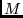
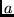
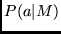

A detailed discussion of the estimation process can be found in ``Hidden Markov models in computational biology: Applications to protein modeling,'' mentioned in the Introduction. This section provides an overview of the mechanics of model estimation.
After the sequences have been divided into training and test sets, and
the initial model or models have been created, buildmodel will
iteratively train the model using expectation-maximization (EM). For
each iteration, a comment line (beginning with a percent sign
`%') is written to the output file (e.g., test.mod) that
includes the iteration number and the average NLL distance between the
set of training sequences and the model. Iterations continue until
either an iteration gains less improvement than the stopcriterion (and noise is less than 10% of its starting value) or
re-estimates iterations have been performed.
When multiple models are being trained (but not multiple subfamily
models) training on each model is stopped
individually when that model reaches the stopcriterion
(provided noise is less than one tenth its initial
value).
If surgery and multiple initial models are used, one model is selected for the surgery procedure, which will attempt to prune and grow the model as appropriate. After each surgery procedure (up to nsurgery), the re-estimation process is repeated. Once either the limit on the number of surgeries is reached, or the surgery parameters produce no model modifications, the training procedure is complete.
After the model has been trained, the NLL scores for the test set are computed and reported, and the final model is written to the output file. This model file may be used as an input file to further refine the model, perhaps by setting the stopcriterion to a smaller value.
It is possible to add noise to the initial model(s). By setting initial_noise to a positive number that amount of noise is added to a model in the beginning of the program. It serves the important purpose to make models differ, if the program runs many models simultaneously -- each model will have a different noise added.
To try to avoid local minima, one can add noise to the models during their estimation, and decrease the noise level gradually in a technique similar to the general optimization method called simulated annealing. The initial level of the noise in this annealing process is called anneal_noise. If anneal_noise is greater than 0, annealing is performed. (If initial_noise is also given, that will determine the noise for the first iteration, and anneal_noise the noise in the following iterations.) During the estimation process the annealing noise is decreased by a speed determined by anneal_length. There are two ways it can be done:
Once the noise level has been calculated, there are three possible ways noise can be added, as controlled by whether randomize is positive, negative, or zero.
Note that the annealing schedules are ad hoc. Still, according to our experience even fast and crude annealing generally improves performance. By default, exponential noise at a ration of 0.8 is used with no initial_noise, an anneal_noise of 5, and a randomize setting of 50 (corresponding to 50 random sequences). These values were chosen experimentally (see the Hughey and Krogh paper mentioned in the introduction).
After a model has been created, adding too much noise to the model may eliminate all the trained information. Therefore, if an initial model or an initial alignment is specified, noise (initial_noise or anneal_noise) is reduced from the default setting by a factor of retrain_noise_scale, which has a default of 0.1. Thus, the effective noise during a retraining would be 0.5 rather than 5. The same is true of surgery iterations, discussed in the next section. In this case, the starting noise of the re-estimation process after a surgery, whether or not an initial model is specified, is the anneal_noise scaled by surgery_noise_scale parameter, which also has a default of 0.1.
A second annealing option, one based on slowing increasing the weights of the sequences being trained is discussed in Section 9.4.2.
It is often the case that during the course of learning, some match states in the model are used by few sequences, while some insertion states are used by many sequences. Model Surgery is a means of dynamically adjusting the model during training.
Surgery will be nsurgery times: a full re-estimation process is performed including reestimates re-estimations, or until the stopcriterion is reached. By default, as in the tRNA example above, surgery is performed up to two times.
The basic operation of surgery is to delete unused match states and to insert match states in place of over-used insert states (the special node types described in Section 8.4.2 are never subjected to surgery modification). In the default case, any match state used by less than one half of the sequences is removed, forcing those sequences to use an insert state or to significantly change their alignment to the model.2 Similarly, any insert state used by more than half sequences is replaced with a number of match states approximating the average number of characters inserted by that insert state.
The surgery heuristic can be adjusted with one parameter or with three. In the first case, setting mainline_cutoff to a number other than the default 0.5 will indicate how much non-match, or main line, activity will be accepted. For example, a setting of 0.25 indicates that any match state used by less than one quarter of the sequences should be removed, while any insert state used by more than one quarter of the sequences should be expanded into a number of match states approximately equal to the average number of characters emitted by that state.
For finer tuning of the surgery process, the parameters cutmatch, cutinsert, and fracinsert, can be used. During surgery, any match state with a smaller portion of sequences than cutmatch is removed, and any insert state with a higher portion of sequences than cutinsert is replaced by the average number of characters emitted by that insert state multiplied by fracinsert. By default, fracinsert is 1.0, and cutmatch and cutinsert are both equal to mainline_cutoff.
These parameters can be set in ways that cause large amounts of surgery. For example, setting cutmatch to 0.5 and cutinsert to 0.25 will delete any match state used by fewer than half the sequences, and insert match states for any insert node used by greater than one quarter of the sequences. Typically, this will result in an oscillating model in several positions -- those positions used by more than one quarter and less than one half of the sequences. Such excessive surgery can sometimes aid in forming a good model.
In addition to the trained model, a report of the training procedure is included in buildmodel's output. The comment sections of this file for the training example in the introduction is reproduced below.
% SAM: buildmodel v3.3.1 (December 20, 2001) compiled 12/27/01_15:14:02 % (c) 1992-2001 Regents of the University of California, Santa Cruz % % Sequence Alignment and Modeling Software System % http://www.cse.ucsc.edu/research/compbio/sam.html % % --------- Citations (SAM, SAM-T99, HMMs) ---------- % R. Hughey, A. Krogh, Hidden Markov models for sequence analysis: % Extension and analysis of the basic method, CABIOS 12:95-107, 1996. % K. Karplus, C. Barrett, R. Hughey, Hidden Markov models for detecting % remote protein homologies, Bioinformatics 14(10):846-856, 1998. % A. Krogh et al., Hidden Markov models in computational biology: % Applications to protein modeling, JMB 235:1501-1531, Feb 1994. % ----------------------------------- % test Host: perch Thu Dec 27 16:02:45 2001 % rph Dir: /projects/kestrel/rph/sam32/SAMBUILD/perch/demos % ----------------------------------- % Internal sequence weighting method 1 % Regularizer FIM_method_train training letter frequencies (1) % Regularizer Insert_method_train training letter frequencies (1) % Model initial FIM_method_train training letter frequencies (1) % Model initial insert_method_train training letter frequencies (1) % Generic, Insert, and FIM tables dynamically reset to % train_reset_inserts geometric mean of match probabilities (6) % All models generated from regularizer. % Sequence-model (global) (SW = 0) % Sequence-model (global) (SW = 0) % Sequence-model (global) (SW = 0) % % Model lengths: 79 77 71 % Itera- Average % tion distance % 1 105.476 105.322 108.176 % 2 104.216 104.560 104.437 % 3 103.944 103.390 103.529 % 4 103.810 103.632 104.093 % 5 104.238 102.931 103.757 % 6 104.922 103.555 104.190 % 7 104.146 102.260 103.825 % 8 103.410 103.806 103.212 % 9 102.292 100.572 101.983 % 10 101.249 100.869 101.556 % 11 100.166 100.650 100.988 % 12 99.637 97.719 99.634 % 13 98.986 96.319 96.970 % 14 96.642 94.471 95.979 % 15 80.853 72.673 75.154 % 16 74.963 69.673 70.740 % 17 71.174 68.998 69.168 % 18 70.187 68.709 68.662
% 19 69.642 68.457 68.336 % 20 69.402 68.197 68.177 % 21 69.271 68.003 68.077 % 22 69.164 67.803 68.001 % 23 69.061 67.615 68.001 % 24 68.978 67.482 68.001 % 25 68.978 67.339 68.001 % 26 68.978 67.189 68.001 % 27 68.978 67.040 68.001 % 28 68.978 66.861 68.001 % 29 68.978 66.697 68.001 % 30 68.978 66.629 68.001 % Model 1 (counting from 0) wins!! % ----------------------------------- % TRAIN 10 sequences (average length 74). Distance statistics... % Min:-41.36 ( 2) Max:-34.91 ( 6) Ave:-37.52 SampDev: 1.97 % MinSDs: -1.95 MaxSDs: 1.33 % % Total CPU time: user 0: 0: 2 system 0: 0: 0 % Finished at: Thu Dec 27 16:02:50 2001 % ----------------------------------- % % Parameters from command line and insert files: % % trainseed 4989 % randseed 0 train /projects/kestrel/rph/sam32/demos/trna10.seq a RNA print_frequencies 1 % % ----------------------------------- % ----------------------------------- MODEL - Final model for run testHere, the initial information includes program version and run information. In this case, no initial models were specified, so buildmodel created 3 models (the default value of Nmodels) from the regularizer of the specified lengths. Next, all three models are trained, and the one with the best score is selected. In this case, the best model did not require any surgery, so the process was complete. If the best model did need surgery, that single model would be further refined. Next, statistics on the scores of the training sequences (and test sequences, if present) and CPU time are presented, followed by non-default parameter settings. The randseed entry is commented out to prevent any future training iterations from reusing the old seed. Finally, the model, along with its generic, letter count, and frequency average nodes is printed. The model has not been included in the example.
If the many_files variable is set, then the results of buildmodel are broken up into three files: the .stat file contains the run statistics and parameter settings, the .mod file contains the final model, and the .freq file contains the frequency model if print_frequencies is set.
SAM is able to perform a variety of weighted training options. Sequence weighting is particularly important when, as normal, the sequence data given to SAM is biased toward some type or subfamily of sequences (for example, from those organisms that have been most studied). Prior to Version 2.0, the SAM software system did not include any internal sequence weighting schemes, but could use weights generated by some other program. Version 2.0 added two internal weighting methods described below, the first of which is turned on by default when external weighting is not used. Version 3.0 includes internal weighting of alignments with several algorithm choices, which is the preferred form of sequence weighting.
For all external sequence weighting options, a sequence weights file
is specified with either the sequence_weights variable (for
buildmodel training sets) or the alignment_weights
variable (for buildmodel or modelfromalign initial
alignments). In this file, any line starting with a percent sign
(%) is ignored as a comment. The first non-comment line is
presumed to be a description of the weights file, for example
including the program that generated the sequence weights. The next
non-comment line contains two integers, the number of weighted
sequences and the number of weighted subfamilies. Remaining
uncommented lines consist of a sequence identifier, white-space, and
floating-point sequence weights, one per family. Weights can be
positive, negative, or zero, and need not sum to one. If a sequence
does not have a corresponding weight, its weight is set to 1.0 and a
message is printed. If a weight does not have a corresponding
sequence, a message is printed. Sequences and weights do not need to
be in the same order within their respective files.
For plain sequence weighting, the number of families is set to 1, and each sequence is assigned a single weight in the sequence_weights file. During the re-estimation cycle, the frequency counts for each sequence will be multiplied by its weight.
Sequence weighting is particularly important in database discrimination: without sequence weighting, the model may specialize to an over-represented subset of the sequences, meaning that family members that do not happen to be in that sub-family will receive low scores.
The file gseg4.seq contains the initial 70-character segments
of each of 4 globins. The last three are quite similar.
; BAHG$VITSP mldqqtiniikatvpvlkehgvtitttfyknlfakhpevrplfdmgrqesleqpkalamtvlaaaqnien ; GLB$APLJU alsaadagllaqswapvfansdangasflvalftqfpesanffndfkgksladiqaspklrdvssrifar ; GLB$APLKU slsaaeadlvgkswapvyankdadganfllslfekfpnnanyfadfkgksiadikaspklrdvssriftr ; GLB$APLLI slsaaeadlagkswapvfanknangadflvalfekfpdsanffadfkgksvadikaspklrdvssriftrWhen a model is trained on this file without weighted training, the model is pecialized to the latter group of sequences, resulting in the following scores:
GLB$APLKU 70 -142.44 -135.82 4.15e-59 GLB$APLLI 70 -142.21 -134.61 1.38e-58 GLB$APLJU 70 -135.59 -128.07 9.55e-56 BAHG$VITSP 70 -101.36 -94.29 4.49e-41
The following simple weight file is an attempt to correct this bias:
% gseg4.weights Weight file for the simple globin segment example. % 4 sequences and 1 family 4 1 BAHG$VITSP 2.0 GLB$APLJU 0.66 GLB$APLKU 0.66 GLB$APLLI 0.66Note that in this weight file, to make the results of the two examples comparable, the weights were made to sum to 4. The reason for this is that in addition to sequences, the regularizer (provided the various confidence parameters are non-zero) shapes the model. Setting all sequence weights uniformly high (e.g., 100.0) will have a similar effect to setting all the regularizer confidences to 0.
With the simple weight file, the following scores are produced.
BAHG$VITSP 70 -134.24 -126.82 3.34e-55 GLB$APLKU 70 -118.19 -111.71 1.23e-48 GLB$APLLI 70 -118.40 -111.26 1.91e-48 GLB$APLJU 70 -111.35 -104.36 1.90e-45Here, with the three similar sequences weighted less, the model better matches (perhaps too much) the dissimilar sequence.
The above example is definitely a toy problem: weights must be set using statistically and biologically valid means.
Warning: This feature is not completely available or completely debugged.
A particularly interesting use of weighting schemes is when a family of sequences can be divided into several subfamilies. This special type of training is used whenever the number of families in a weights file is greater than one.
In this case, SAM will train one model per family in parallel so that each model can specialize to its subfamily. Although this sounds just like training each subfamily separately, there is an important difference. During the regularization procedure, the counts across all subfamily models are taken into account when re-estimating each subfamily's model. This means that, in the case of multiple alignments, a full-family multiple alignment can be generated by aligning each sequence to its appropriate subfamily model and combining the results. At the moment, subfamily modeling is not fully implemented and not recommended for use.
There are a few changes in the functionality of buildmodel when subfamily modeling is used. First, only a single suite of subfamily models is trained at a time, so multiple runs must be performed to match the functionality of starting with more than one model and selecting the best. Second, prior libraries must be used. Third, a more conservative approach to model surgery is taken. The subfamily models are always modified in parallel, and only if all the subfamily models agree on the surgery procedure (if all subfamily models believe inserting new model positions is appropriate, the minimum of all proposed insertion lengths is used). To encourage more surgery, users may wish to lower the surgery thresholds when training with multiple models. See Section 9.2.
Also, model files are treated somewhat differently. The many_files option is always turned on. The subfamily models are writing to files named, for example, runname.3.mod, where the number indicates which subfamily (starting from zero) that model is for. It is possible to retrain a suite of subfamily models by setting family_base_file to the root name of the suite of models (i.e., runname in the above example).
The hmmscore program does not yet score against multiple models--to perform database search against a suite of models, hmmscore must be run independently for each subfamily, and then the results combined by, for example, classifying each sequence as a member of the subfamily with which it scored best.
Sequence weights can also be an effective means of annealing (Section 9.1) during the training process. When using this option, the sequence weights are slowly increased over the first several re-estimation cycles. Thus, at first, the sequences will have little effect on the model for the next training iteration: the regularizer and prior library will dominate, though particularly strong signals in the sequences, such as strongly conserved regions, will show through. As the training continues, the sequence weight multiplier is brought up to its final value, giving full weight to the sequences.
The annealing schedule options are similar to that available with noise generation. The relevant parameters are weight_length, which indicates how long the annealing should last, and weight_final, indicating the final sequence weight multiplier (the default is 1.0). The sequence weight multiplier found be the formulas below is multiplier by the sequence weight (which is 1.0 if no weight file is used in training) to find each sequence's weight during the given re-estimation iteration.
Version 3.0 of SAM incorporates the weighting methods used in the SAM-T99 remote homology detection method. See Section 4.. Relevant parameters include: aweight_method, for which 0 indicates no internal alignment weighting, 1 indicates Karplus relative weighting, 2 Henikoff relative weighting, and 3 flat relative weighting; aweight_bits indicating the target number of bits to save per column; and aweight_exponent indicating the weighting exponent. The Dirichlet prior_library and alignfile specified for buildmodel or modelfromalign are the remaining components of the method.
For the Henikoff and flat weighting schemes, if aweight_bits is
set negative, the initial weighting is used, without adjusting the
total weights to get a specified number of bits saved. The initial
weighting in these schemes has a total weight of
By default, internal weighting of alignments is turned on, with Henikoff relative weighting, 0.5 target bits per column, and a 0.5 exponent. If an alignment_weights file is specified, the external weights are used, and unless aweight_method is set to zero, a warning message is printed.
Version 2.0 of SAM introduced two methods of internal weighting during buildmodel training. These methods are based entirely on the log-odds score of the sequence against the model being trained. Their invention was motivated by HMMer's maximum-discrimination training method. In general, these methods do not produce as good results as the alignment-based weighting.
Given a linear hidden Markov model , a dynamic programming
calculation can be used to calculate, for a given sequence, the
probability that sequence  was generated by the model, .
The question of interest is, however, does that model match the
sequence? That is, is the sequence more likely to be generated by the
hidden Markov model than some other, less structured null model,
 . Making the assumption that the models and
. Making the assumption that the models and  are a priori equally likely, this reduces to the log-odds probability of
are a priori equally likely, this reduces to the log-odds probability of

Internal weighting method 1 uses the following equation to calculate a
sequence weight.
is the log-odds score of the sequence. The program keeps track of
the current worst score  and the current best score
and the current best score  and these are
used to decide on the two extreme weights. The worst scoring sequence will
have a weight of 1, while the best scoring sequence will have a weight of
and these are
used to decide on the two extreme weights. The worst scoring sequence will
have a weight of 1, while the best scoring sequence will have a weight of  ,
typically in the 0.01 to 0.1 range.
,
typically in the 0.01 to 0.1 range.  is a user-controlled
parameter entered on the command line as
is a user-controlled
parameter entered on the command line as  .
.
To use method 1 with  =.1, run buildmodel with the following arguments:
=.1, run buildmodel with the following arguments:
buildmodel runname -train train.seq -internal_weight 1 -iweight .1
Internal weighting method 2 is a variation of method 1. When using method 1, sequences with very poor scores may get excessively large weights. Method 2 modifies the weights of such outlier sequences. If a sequence scores so badly that it exceeds the median score by three standard deviations, it is weighted with a decreasing linear weight function, reaching a minimum of 1.0 for the sequence with the worst score.
Method 2:
To use method 1 with  =0.05, run buildmodel with the following arguments:
=0.05, run buildmodel with the following arguments:
buildmodel runname -train train.seq -internal_weight 2 -iweight 0.05
The current SAM default is to not use internal weighting. If internal weighting is selected and no iweight parameter entered, SAM defaults to an iweight of 0.1.
Looking again at the toy problem example demonstrated in the previous section, we saw the following scores when a model was trained on 4 globins without weighting.
GLB$APLKU 70 -142.44 -135.82 4.15e-59 GLB$APLLI 70 -142.21 -134.61 1.38e-58 GLB$APLJU 70 -135.59 -128.07 9.55e-56 BAHG$VITSP 70 -101.36 -94.29 4.49e-41
The unweighted model is overspecialized.
Internal weighting method 1 produces these scores:
GLB$APLKU 70 -107.98 -99.96 1.56e-43 GLB$APLLI 70 -109.40 -99.94 1.57e-43 GLB$APLJU 70 -106.94 -98.36 7.65e-43 BAHG$VITSP 70 -103.21 -95.55 1.27e-41
Internal weighting method 2 produces these scores:
GLB$APLLI 70 -111.28 -101.90 2.23e-44 GLB$APLKU 70 -109.35 -101.45 3.49e-44 GLB$APLJU 70 -109.54 -101.03 5.34e-44 BAHG$VITSP 70 -104.57 -96.92 3.23e-42
When using internal weighting, you can inspect all sequence weights generated during each iteration of the model building process.
buildmodel runname -train train.seq -internal_weight 2 -iweight 0.05 -print_all_weights 1
The print_all_weights option when set to 1 will produce a weight output file once per iteration. The files are named runname1.weightoutput, where 1 is the iteration number.
By default, print_all_weights is set to off.
Continuing the example of Figure 14 on
page  , performing the two commands:
, performing the two commands:
buildmodel train4w -train globins50.seq -randseed 0 -trainseed 0 -ntrain 4 -internalweight 2 buildmodel train4wreg -train globins50.seq -priorlibrary recode1.20comp -regularizerfile weak-gap.regularizer -randseed 0 -trainseed 0 -ntrain 4 -internalweight 2 hmmscore train4w -i train4w.mod -db globins50.seq -sw 2 hmmscore train4wreg -i train4wreg.mod -db globins50.seq -sw 2results in the score histograms of Figure 15, in which the scores improve even further from the use of regularizers and Dirichlet mixtures.
For increased speed and performance (and possible worse results), Viterbi training is now possible (though in some instances not robust). The dpstyle parameter should be set to 1 for Viterbi training, rather than the default 0, which indicates EM training. It can also be set to 4 or 5 to train based on the posterior-decoded alignments (these options will more than double computation time and are not recommended). See Section 10.1. Two other values should only be used for scoring. Setting dpstyle to 2 will produce a very large dump of the posterior probabilities of the entire dynamic programming table in the file runname.pdoc. This option should be used in conjunction with the grabdp program. See Section 10.4. Setting dpstyle to 3 will produce a frequency dump for each sequence against each model as scored or aligned, using the EM dynamic programming method (also for use with grabdp). Files will be of the form runname.id.freq.
The related adpstyle parameter can be used to choose beteen Viterbi (1), posterior-decoded alignment based on transitions and character emission posteriors (4), and posterior-decoded alignment based solely on emission posteriors (5) for alignments and multiple domain alignments. See Section 10.1.
Future research will help determine the usefulness of these option. Fragment training (Section 10.1.2) with the SW variable can also be used with both the Viterbi and EM training algorithms, but has not been completely evaluated.
SAM HMM constraints provide a mechanism for associating position in a sequence with a specific node in a model. During model training, a constrained position remains associated with its node, allowing the remaining portions of the sequence to align naturally to the model. This serves as a method of incorporating prior knowledge about the training sequence, such as structurally similar regions.
Currently, there is an inconsistency in scoring constraints, in that for EM-style scoring, the constrained score is reported, which will generally provide a very strong signal. For Viterbi or posterior-alignment scoring, constraints are used to find the best path, but the unconstrained score of that path is reported, and thus the score of a constrained sequence is similar to that of an unconstrained sequence.
The node a residue is constrained to is specified using a node label. A node label is a unique, positive integer assigned to a node. Often it is the same as the node number, however this is not required. This is useful for allowing model surgery to add or remove a node. It is specified using the NODELABELS declaration in a model (see Section 8.4.3).
Node labels must be increasing in value from from left to right in the model. Labels are normally specified as contiguous numbers for a set of contiguous nodes to allow for easier constraint definition for contiguous residues. Labeled nodes will not be removed by model surgery; it is possible to have nodes added between labeled nodes.
When creating a model from an alignment, SAM will define node labels automatically.
Constraints for individual residues are specified in line-oriented constraint definition files separate from the sequence databases. By convention, they have an extension of .cst. These files are specified using the -constraints option, which may be specified multiple times. Certain SAM programs can create new constraint definition files using the -constraints_out.
Lines containing only whitespace and those where the first non-whitespace character is ``#'' are comments and ignored. For all types of lines, leading white spaces are ignored.
The file is divided into sections starting with a line containing only the section name followed by a colon. Currently there is only one type of section containing sequence constraints, starting with
constraints:
Multiple constraints sections may appear, allowing for the easy combining of files.
A constraint entry defines the model nodes to which residues of a sequence are constrained. Multiple entries may appear for a sequence, however a given residue of a sequence may be constrained only once. Constraints entries consists of lines in the form:
seqid constrdef, constrdef, ...
Where the seqid is any sequence identifier consisting of non-whitespace characters and constrdef defines a set of model node labels for a range of positions in the sequence in any combination of the following formats:
Positions in sequences are identified by one-based indices and node labels are positive numbers.
A simple example of a constraint file is shown here.
constraints: PROT1 10-30: 8, 80-82: 100 PROT2 12-28: 10, 62: 100 PROT3 16-32: 12
To train a new model using constraints, specify one or more constraints file using the -constraints option to buildmodel. The node labels in the constraints file are assigned to nodes with the same node number. If necessary, the length of the model will be increased to allow for all labels. If surgery is used, an unlabeled node may be added or removed, resulting in the labels and node numbers differing in the final model. When retraining a model using constraints, the model must already contain labels. Constraints work with both EM and Viterbi
When creating a model from a multiple alignment with modelfromalign or using the -alignfile parameter to buildmodel, constraints can be created for specific positions or for all match positions. Constrained positions are specified using -constraints option. Model labels need not be specified and are ignored if they are. The residues specified in the file will be constrained to the nodes to which they are aligned. Insert sequences positions will not be constrained. To constrain all match positions in an alignment without creating a constraints definition file, use -constraints_from_align. With either approach, a new constraints definition file maybe required as input to other SAM programs. A new constraints file for the alignment sequences can be created using the -constraints_out option.
Constraints can be used when creating multiple-domain alignments with the hmmscore program (See Section 10.2.4.). The constraints for the sequence being aligned are specified with the -constraints option. The model must have node labels that correspond to the constraints file; thus the constraints file are normally the ones used to train the model or created when the model was defined from an alignment. If the extracted domains are to be processed by another SAM program, a constraint definition file for the domains can be written to a file specified by the -constraints_out option.